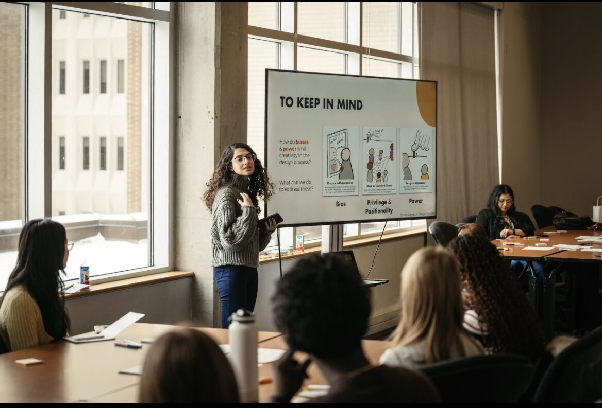
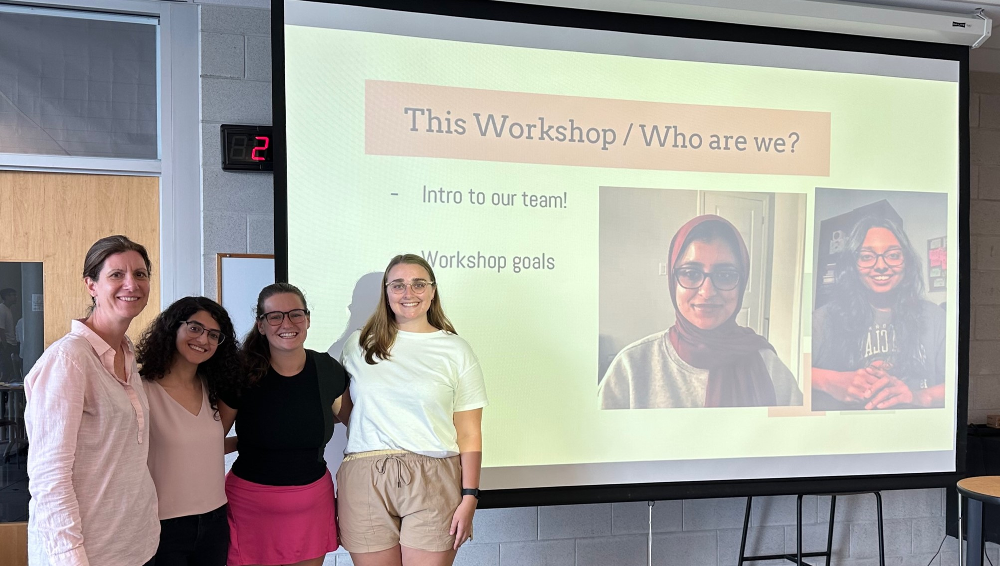
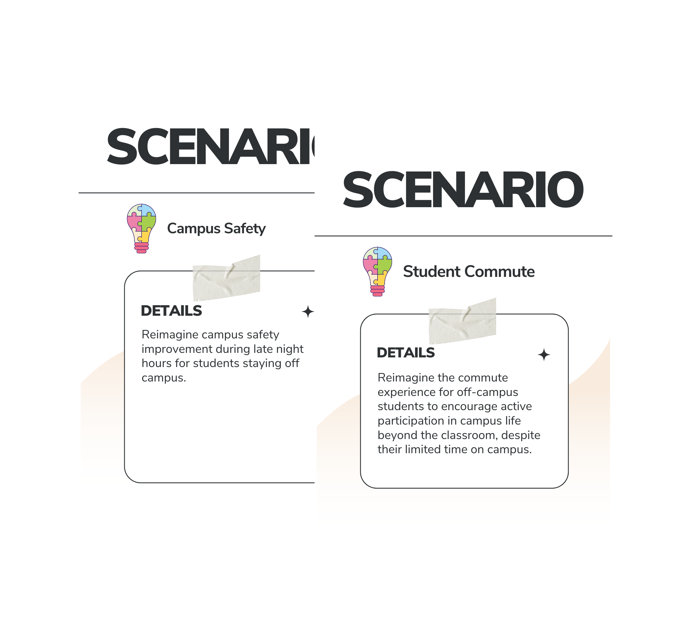
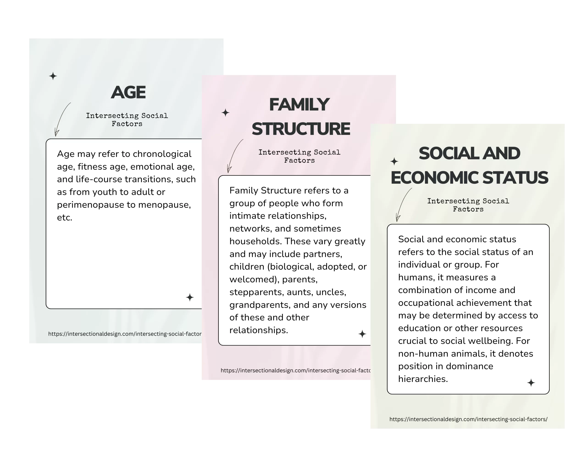
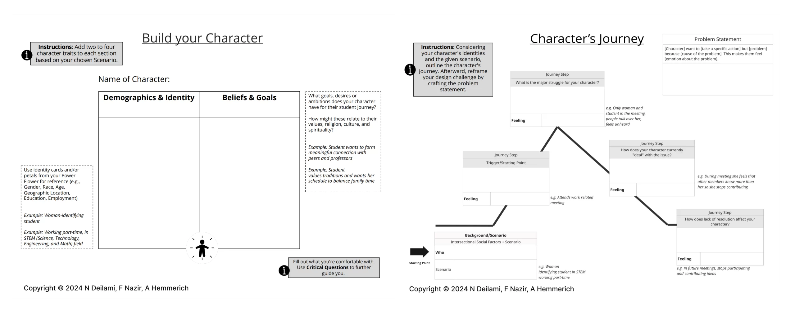
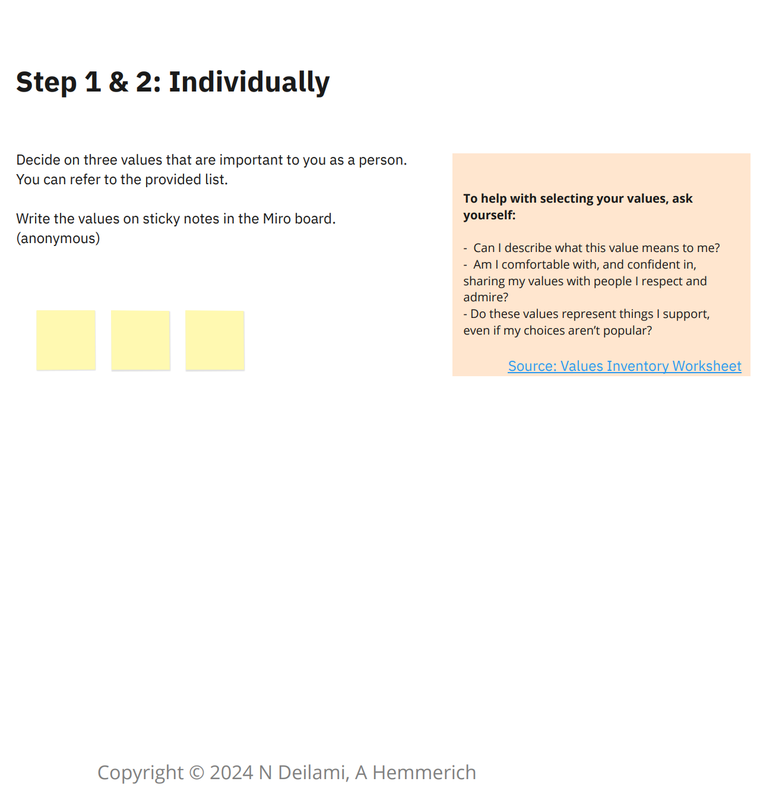
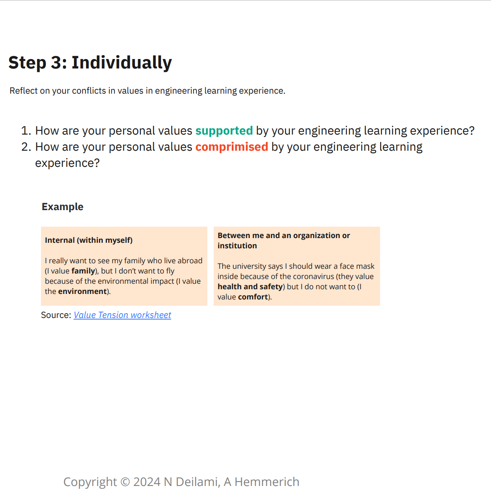

Inclusive Innovation Design Challenge Workshops
Co-designed and co-facilitated three inclusive design thinking workshops for engineering students at the School of Engineering Practice and Technology (SEPT).

Overview
The Inclusive innovation workshops were inspired by my work as a research assistant working on inclusive learning through equity-based design approaches in engineering education research.
To summarize, the integration of equity, diversity, inclusion, and accessibility (EDIA) principles within engineering is universally recognized for its numerous benefits, including more innovative and inclusive design results. Equity-based design methods, like design thinking, inherently address issues of equity, promote diversity, and foster an inclusive learning environment. For further details on our research, please click here.

Hence, the workshops were designed to help participants value diverse identities and incorporate equity principles into their engineering work using equity-based design approaches.
Challenge: The challenge was to develop interactive design exercises that would help engineering students become more aware of and engaged with EDIA principles through equity-based design approaches.
Outcome: The work resulted in the creation of three successful workshops with 55 participants, leading to a demonstrated shift in perspective regarding appreciating diverse identities and perspectives in the design process.
My Role:
Workshop Co-Designer & Co-Facilitator
Team:
Project Supervisor
Undergraduate Students
Design Students
Participants:
5-80 people
1. Workshop Deliverables
1.1. Workshop 1: Inclusive Design Workshop
The workshop's purpose was to help participants engage in interactive design exercises to become more aware of and engaged with EDIA principles by introducing them to Design Thinking, Co-Design, and Liberatory Design is an extension of design thinking that focuses on breaking habits contributing to inequity in design work.
Here are the following design exercises that I contributed to:
a. Scenario Card

Read both scenario cards as text
Two cards from the scenario deck. Each is headed SCENARIO, carries a lightbulb icon beside its title, and holds a taped-on Details panel.
Campus Safety — “Reimagine campus safety improvement during late night hours for students staying off campus.”
Student Commute — “Reimagine the commute experience for off-campus students to encourage active participation in campus life beyond the classroom, despite their limited time on campus.”
The team engaged in multiple discussions to determine the most relatable challenge for participants, settling on the concept of the students' journey.
Utilizing chatGPT, I developed various scenarios related to students' experiences. After finalizing these scenarios, I crafted a deck of cards on Canva, each focusing on different aspects of student life, including campus safety, commuting, cafeteria services, and professor interactions.
In the workshop's first activity, we invited participants to explore one of these scenarios as their design challenge.
b. Intersectional Design Factor Identity Cards

Read all three identity cards as text
Three cards from the intersecting social factors deck. Each is titled with a factor, subtitled “Intersecting Social Factors”, and credits intersectionaldesign.com.
Age — “Age may refer to chronological age, fitness age, emotional age, and life-course transitions, such as from youth to adult or perimenopause to menopause, etc.”
Family Structure — “Family Structure refers to a group of people who form intimate relationships, networks, and sometimes households. These vary greatly and may include partners, children (biological, adopted, or welcomed), parents, stepparents, aunts, uncles, grandparents, and any versions of these and other relationships.”
Social and Economic Status — “Social and economic status refers to the social status of an individual or group. For humans, it measures a combination of income and occupational achievement that may be determined by access to education or other resources crucial to social wellbeing. For non-human animals, it denotes position in dominance hierarchies.”
Drawing inspiration from the work of Jones, H., Schiebinger, L., Grimes, A., & Small, A. (2021) on Intersectional Design, I proposed introducing students to the exploration of social and environmental factors. I created a deck of cards that represent various identity facets such as Gender, Language, Family Structure, Disability, Age, Race, etc. These definitions were thoughtfully rephrased with assistance from my team members.
Students were prompted to select 2-3 identity factors to consider when considering their user's journey and challenges.
c. Build Character and User Journey
With Fatima, I redesigned the worksheet templates, Build Your Character and Character's Journey, to ensure they were easy to follow during the workshop, as opposed to the original persona and journey mapping from design thinking, which took longer to complete.
Participants were encouraged to develop a fictional persona based on their own experiences and the team members from the groups. Then, they were to map out the character's journey in the selected scenario and the selected identity intersectional factors.

Text description of both worksheets
Build your Character. Instruction: add two to four character traits to each section based on your chosen scenario. A named character sits above a two-column grid, Demographics & Identity and Beliefs & Goals. A side note directs participants to the identity cards or Power Flower petals for reference — gender, race, age, geographic location, education, employment — with examples such as “woman-identifying student” and “working part-time, in a STEM field”. A second panel asks what goals, desires or ambitions the character has for their student journey, and how these relate to their values, religion, culture and spirituality. A footer reads “Fill out what you’re comfortable with. Use Critical Questions to further guide you.”
Character’s Journey. Instruction: considering your character’s identities and the given scenario, outline the character’s journey, then reframe the design challenge by crafting the problem statement. A line rises and falls across four journey steps, each paired with a Feeling box: a trigger or starting point; the major struggle; how the character currently deals with the issue; and how lack of resolution affects them. Worked examples run alongside — attending a work-related meeting; being the only woman and student in the meeting and being talked over; feeling other members know more, so she stops contributing; and in future meetings, stopping participating altogether. A problem statement template completes it: “[Character] wants to [take a specific action] but [problem] because [cause of the problem]. This makes them feel [emotion about the problem].”
Both templates are credited to N Deilami, F Nazir and A Hemmerich, 2024.
1.2. Virtual Follow-Up Workshop: Cultivating Trust and Creative Confidence
The workshop drew inspiration from Erin A. Cech's 2013 research paper, which explores the impact of engineering values on engineering culture and the diminishing engagement of students with social concepts throughout their engineering education.
The goals of the workshop were:
- Recognize our personal values and engineering values
- Understand how our values impact our relationship with others and the design
As the workshop was virtual, I created the slides using Miro to facilitate collaborative activities.
a. Explore Personal Values
This activity prompted students to think about their top three values from a sample list of values. Interestingly, many of us may not have the vocabulary to express our values in words.

Read this slide as text
Step 1 & 2: Individually.
“Decide on three values that are important to you as a person. You can refer to the provided list. Write the values on sticky notes in the Miro board (anonymous).” Three blank sticky notes sit below the instruction.
A side panel headed “To help with selecting your values, ask yourself” offers three prompts:
- Can I describe what this value means to me?
- Am I comfortable with, and confident in, sharing my values with people I respect and admire?
- Do these values represent things I support, even if my choices aren’t popular?
Sourced from the Values Inventory Worksheet. Credited to N Deilami and A Hemmerich, 2024.
b. Reflect on Value Conflicts
The follow-up activity asked students to think about how their values are supported and compromised in their engineering learning.

Read this slide as text
Step 3: Individually. “Reflect on your conflicts in values in engineering learning experience.”
- How are your personal values supported by your engineering learning experience?
- How are your personal values compromised by your engineering learning experience?
Two worked examples follow.
Internal (within myself): “I really want to see my family who live abroad (I value family), but I don’t want to fly because of the environmental impact (I value the environment).”
Between me and an organization or institution: “The university says I should wear a face mask inside because of the coronavirus (they value health and safety) but I do not want to (I value comfort).”
Sourced from the Value Tension worksheet. Credited to N Deilami and A Hemmerich, 2024.
c. Micro-Design challenge
The workshop ended by asking students to think about value conflicts when they are in the space between students and instructors, such as in difficult/complex conversations related to ambiguity.
2. Feedback & Outcome
- 55 students participated
- The post-workshop survey results demonstrated an overall positive experience. They acknowledged a shift in perspective regarding appreciating the values of their unique identities and diverse perspectives in the design process.
3. Next Steps
3.1. Gather Feedback
We are currently conducting focus group studies to understand students' experiences in these workshops and how we can improve them.
3.2. Incorporate resources into other academic work
We are also looking into more collaborative opportunities how to share and incorporate these design-thinking activities within McMaster University and other academic programs and instructors.